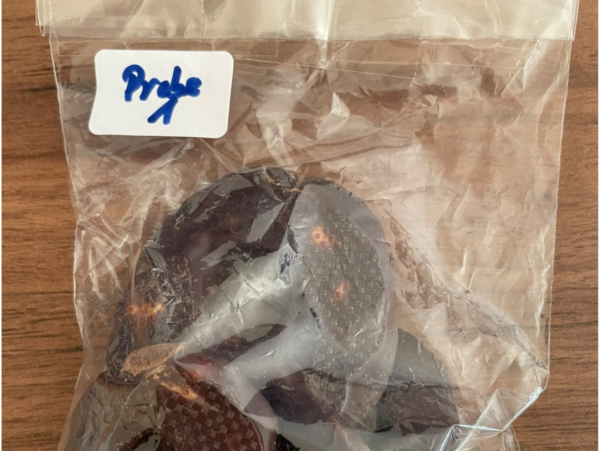
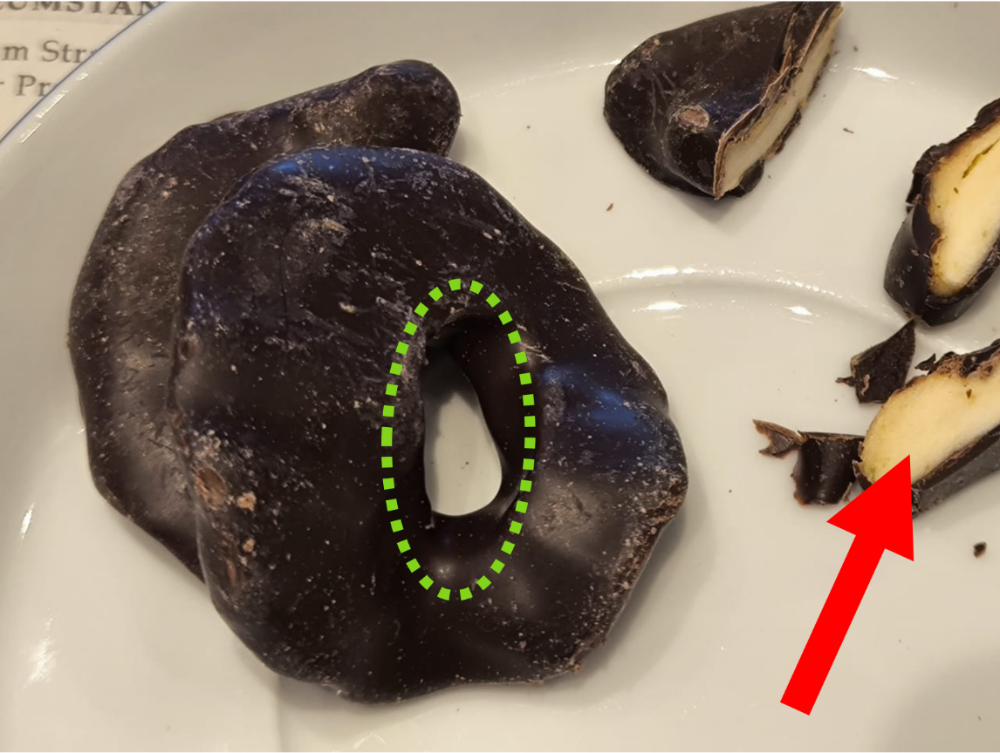
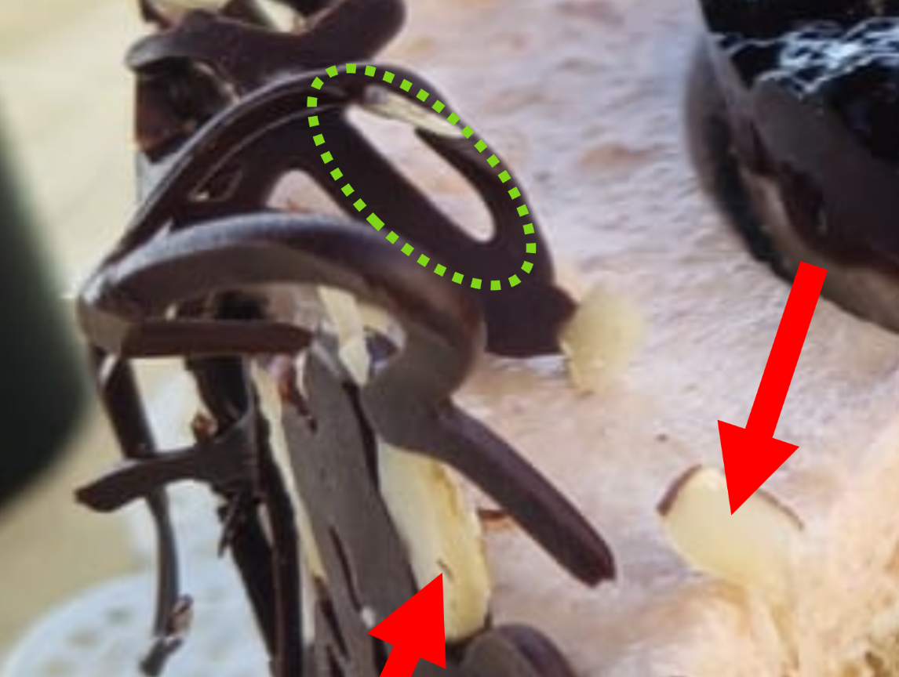

Laborbericht Nr. 04 Der Ring des Verbrechens
Stammdaten
Untersuchungsauftrag
Chromatografische Analyse der enthaltenen Faserbestandteile mit besonderem Augenmerk auf einen möglichen Zusammenhang zum Fall Nielsen (Pullover?).



Die Probenentnahme erfolgte laut Ermittlungsbericht mittels Spatel und luftdichtem Probenbeutel. Die Zentrale würdigt ausdrücklich die professionelle Sicherung des Materials. Eine derart sorgfältige Verpackung hätte auch bei deutlich weniger appetitlichen Beweismitteln ihre Berechtigung.
Methodik
Mechanische Trennung der hellen und dunklen Bestandteile. Gefolgt von mikroskopischer Untersuchung der mutmaßlichen Faserstrukturen und chromatografischen Materialabgleich mit Referenzmaterial aus dem Fall Nielsen. Ergänzende optische Begutachtung des bei Feierlichkeiten im direkten Umfeld des CI-D. gesichteten Vergleichsobjekts.
Messergebnisse
Die untersuchten Probenbestandteile sind nachfolgend aufgeführt.
| Messwert | Dunkler Bestandteil | Heller Heller Bestandteil |
|---|---|---|
| Organischer Anteil | 99.8% | 99.1% |
| C2H5 Faserartige Strukturen | Gering | Deutlich |
| Ũbereinstimmung mit Pullover Nielsen | 0.4% | 3.2% |
AUSWERTUNG UND INTERPRETATION
Die dunklen, ringförmigen Strukturen zeigen eine auffällige Ähnlichkeit mit auf dem Referenzmaterial gefundenen Strukturen auf. Die inneren helleren Bestandteile weisen charakteristische Merkmale eines getrockneten Pflanzenmaterials auf. Die Untersuchung konnte die ursprüngliche Vermutung eines textilen Beweismittels nicht bestätigen. Stattdessen ergab sich eine eindeutige Zuordnung zu einer schokoladenüberzogenen Fruchtzubereitung.
Kriminalistischer Abgleich
Ein Zusammenhang mit dem vermissten Pullover konnte nicht festgestellt werden. Die Probe enthält weder relevante Textilfasern noch sonstige Hinweise, die eine Verbindung zum Fall Nielsen nahelegen. Besonders bemerkenswert ist jedoch der Vergleich mit dem Referenzmaterial aus dem häuslichen Umfeld des CI-D. Die Ähnlichkeit der Ringstruktur ist verblüffend. Ob es sich dabei um eine zufällige Übereinstimmung oder um eine bislang unbekannte kulinarische Verbindung handelt, bleibt offen. Die Zentrale möchte allerdings darauf hinweisen, dass nicht jede ringförmige Struktur automatisch auf eine kriminelle Vereinigung schließen lässt.
Gesamtbewertung
Untersuchungsergebnis- Materialidentifikation: Weitere Untersuchungen erforderlich.
- Textilfasern: Nicht nachweisbar.
- Übereinstimmung mit Pullover Nielsen: Keine
- Übereinstimmung mit Referenzprobe: Auffällig
- Kriminalistische Relevanz: Gering
- Qualität der Spurensicherung: Vorbildlich